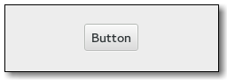

Gtk.Button
Example
| Subclasses: | Gtk.ColorButton, Gtk.FontButton, Gtk.LinkButton, Gtk.LockButton, Gtk.ScaleButton, Gtk.ToggleButton |
|---|
Methods
| Inherited: | Gtk.Bin (1), Gtk.Container (27), Gtk.Widget (256), GObject.Object (33), Gtk.Buildable (10), Gtk.Actionable (5), Gtk.Activatable (6) |
|---|
| static | new() |
| static | new_from_icon_name(icon_name, size) |
| static | new_from_stock(stock_id) |
| static | new_with_label(label) |
| static | new_with_mnemonic(label) |
| clicked() | |
| enter() | |
| get_alignment() | |
| get_always_show_image() | |
| get_event_window() | |
| get_focus_on_click() | |
| get_image() | |
| get_image_position() | |
| get_label() | |
| get_relief() | |
| get_use_stock() | |
| get_use_underline() | |
| leave() | |
| pressed() | |
| released() | |
| set_alignment(xalign, yalign) | |
| set_always_show_image(always_show) | |
| set_focus_on_click(focus_on_click) | |
| set_image(image) | |
| set_image_position(position) | |
| set_label(label) | |
| set_relief(relief) | |
| set_use_stock(use_stock) | |
| set_use_underline(use_underline) |
Virtual Methods
| Inherited: | Gtk.Container (10), Gtk.Widget (82), GObject.Object (7), Gtk.Buildable (10), Gtk.Actionable (4), Gtk.Activatable (2) |
|---|
| do_activate() | |
| do_clicked() | |
| do_enter() | |
| do_leave() | |
| do_pressed() | |
| do_released() |
Properties
| Inherited: | Gtk.Container (3), Gtk.Widget (38), Gtk.Actionable (2), Gtk.Activatable (2) |
|---|
| Name | Type | Flags | Short Description |
|---|---|---|---|
| always-show-image | bool | r/w/c | Whether the image will always be shown |
| focus-on-click | bool | r/w | Whether the button grabs focus when it is clicked with the mouse |
| image | Gtk.Widget | r/w | Child widget to appear next to the button text |
| image-position | Gtk.PositionType | r/w | The position of the image relative to the text |
| label | str | r/w/c | Text of the label widget inside the button, if the button contains a label widget |
| relief | Gtk.ReliefStyle | r/w | The border relief style |
| use-stock | bool | r/w/c | If set, the label is used to pick a stock item instead of being displayed |
| use-underline | bool | r/w/c | If set, an underline in the text indicates the next character should be used for the mnemonic accelerator key |
| xalign | float | r/w | Horizontal position of child in available space. 0.0 is left aligned, 1.0 is right aligned |
| yalign | float | r/w | Vertical position of child in available space. 0.0 is top aligned, 1.0 is bottom aligned |
Style Properties
| Inherited: | Gtk.Widget (17) |
|---|
| Name | Type | Default | Flags | Short Description |
|---|---|---|---|---|
| child-displacement-x | int | 0 | r | How far in the x direction to move the child when the button is depressed |
| child-displacement-y | int | 0 | r | How far in the y direction to move the child when the button is depressed |
| default-border | Gtk.Border | None | r | Extra space to add for GTK_CAN_DEFAULT buttons |
| default-outside-border | Gtk.Border | None | r | Extra space to add for GTK_CAN_DEFAULT buttons that is always drawn outside the border |
| displace-focus | bool | False | r | Whether the child_displacement_x/_y properties should also affect the focus rectangle |
| image-spacing | int | 2 | r | Spacing in pixels between the image and label |
| inner-border | Gtk.Border | None | r | Border between button edges and child. |
Signals
| Inherited: | Gtk.Container (4), Gtk.Widget (69), GObject.Object (1) |
|---|
| Name | Short Description |
|---|---|
| activate | The ::activate signal on Gtk.Button is an action signal and emitting it causes the button to animate press then release. |
| clicked | Emitted when the button has been activated (pressed and released). |
| enter | Emitted when the pointer enters the button. |
| leave | Emitted when the pointer leaves the button. |
| pressed | Emitted when the button is pressed. |
| released | Emitted when the button is released. |
Fields
| Inherited: | Gtk.Bin (1), Gtk.Container (1), Gtk.Widget (1), GObject.InitiallyUnowned (3), GObject.Object (3) |
|---|
| Name | Type | Access | Description |
|---|---|---|---|
| bin | Gtk.Bin | r |
Class Details
- class Gtk.Button(label=None, stock=None, use_stock=False, use_underline=False, **kwds)
Bases: Gtk.Bin, Gtk.Container, Gtk.Actionable, Gtk.Activatable
The Gtk.Button widget is generally used to trigger a callback function that is called when the button is pressed. The various signals and how to use them are outlined below.
The Gtk.Button widget can hold any valid child widget. That is, it can hold almost any other standard Gtk.Widget. The most commonly used child is the Gtk.Label.
- static new()
Returns: The newly created Gtk.Button widget. Return type: Gtk.Widget Creates a new Gtk.Button widget. To add a child widget to the button, use Gtk.Container.add ().
- static new_from_icon_name(icon_name, size)
Parameters: Returns: a new Gtk.Button displaying the themed icon
Return type: Creates a new button containing an icon from the current icon theme.
If the icon name isn’t known, a “broken image” icon will be displayed instead. If the current icon theme is changed, the icon will be updated appropriately.
This function is a convenience wrapper around Gtk.Button.new () and Gtk.Button.set_image ().
New in version 3.10.
- static new_from_stock(stock_id)
Parameters: stock_id (str) – the name of the stock item Returns: a new Gtk.Button Return type: Gtk.Widget Creates a new Gtk.Button containing the image and text from a stock item. Some stock ids have preprocessor macros like Gtk.STOCK_OK and Gtk.STOCK_APPLY.
If stock_id is unknown, then it will be treated as a mnemonic label (as for Gtk.Button.new_with_mnemonic ()).
Deprecated since version 3.10: Use Gtk.Button.new_with_label () instead.
- static new_with_label(label)
Parameters: label (str) – The text you want the Gtk.Label to hold. Returns: The newly created Gtk.Button widget. Return type: Gtk.Widget Creates a Gtk.Button widget with a Gtk.Label child containing the given text.
- static new_with_mnemonic(label)
Parameters: label (str) – The text of the button, with an underscore in front of the mnemonic character Returns: a new Gtk.Button Return type: Gtk.Widget Creates a new Gtk.Button containing a label. If characters in label are preceded by an underscore, they are underlined. If you need a literal underscore character in a label, use “__” (two underscores). The first underlined character represents a keyboard accelerator called a mnemonic. Pressing Alt and that key activates the button.
- clicked()
Emits a Gtk.Button ::clicked signal to the given Gtk.Button.
- enter()
Emits a Gtk.Button ::enter signal to the given Gtk.Button.
Deprecated since version 2.20: Use the Gtk.Widget ::enter-notify-event signal.
- get_alignment()
Returns: xalign: return location for horizontal alignment yalign: return location for vertical alignment Return type: (xalign: float, yalign: float) Gets the alignment of the child in the button.
New in version 2.4.
Deprecated since version 3.14: Access the child widget directly if you need to control its alignment.
- get_always_show_image()
Returns: True if the button will always show the image Return type: bool Returns whether the button will ignore the Gtk.Settings :gtk-button-images setting and always show the image, if available.
New in version 3.6.
- get_event_window()
Returns: button ’s event window. Return type: Gdk.Window Returns the button’s event window if it is realized, None otherwise. This function should be rarely needed.
New in version 2.22.
- get_focus_on_click()
Returns: True if the button grabs focus when it is clicked with the mouse. Return type: bool Returns whether the button grabs focus when it is clicked with the mouse. See Gtk.Button.set_focus_on_click ().
New in version 2.4.
- get_image()
Returns: a Gtk.Widget or None in case there is no image Return type: Gtk.Widget Gets the widget that is currenty set as the image of button. This may have been explicitly set by Gtk.Button.set_image () or constructed by Gtk.Button.new_from_stock ().
New in version 2.6.
- get_image_position()
Returns: the position Return type: Gtk.PositionType Gets the position of the image relative to the text inside the button.
New in version 2.10.
- get_label()
Returns: The text of the label widget. This string is owned by the widget and must not be modified or freed. Return type: str Fetches the text from the label of the button, as set by Gtk.Button.set_label (). If the label text has not been set the return value will be None. This will be the case if you create an empty button with Gtk.Button.new () to use as a container.
- get_relief()
Returns: The current Gtk.ReliefStyle Return type: Gtk.ReliefStyle Returns the current relief style of the given Gtk.Button.
- get_use_stock()
Returns: True if the button label is used to select a stock item instead of being used directly as the label text. Return type: bool Returns whether the button label is a stock item.
Deprecated since version 3.10.
- get_use_underline()
Returns: True if an embedded underline in the button label indicates the mnemonic accelerator keys. Return type: bool Returns whether an embedded underline in the button label indicates a mnemonic. See Gtk.Button.set_use_underline ().
- leave()
Emits a Gtk.Button ::leave signal to the given Gtk.Button.
Deprecated since version 2.20: Use the Gtk.Widget ::leave-notify-event signal.
- pressed()
Emits a Gtk.Button ::pressed signal to the given Gtk.Button.
Deprecated since version 2.20: Use the Gtk.Widget ::button-press-event signal.
- released()
Emits a Gtk.Button ::released signal to the given Gtk.Button.
Deprecated since version 2.20: Use the Gtk.Widget ::button-release-event signal.
- set_alignment(xalign, yalign)
Parameters: Sets the alignment of the child. This property has no effect unless the child is a Gtk.Misc or a Gtk.Alignment.
New in version 2.4.
Deprecated since version 3.14: Access the child widget directly if you need to control its alignment.
- set_always_show_image(always_show)
Parameters: always_show (bool) – True if the menuitem should always show the image If True, the button will ignore the Gtk.Settings :gtk-button-images setting and always show the image, if available.
Use this property if the button would be useless or hard to use without the image.
New in version 3.6.
- set_focus_on_click(focus_on_click)
Parameters: focus_on_click (bool) – whether the button grabs focus when clicked with the mouse Sets whether the button will grab focus when it is clicked with the mouse. Making mouse clicks not grab focus is useful in places like toolbars where you don’t want the keyboard focus removed from the main area of the application.
New in version 2.4.
- set_image(image)
Parameters: image (Gtk.Widget) – a widget to set as the image for the button Set the image of button to the given widget. The image will be displayed if the label text is None or if Gtk.Button :always-show-image is True. You don’t have to call Gtk.Widget.show () on image yourself.
New in version 2.6.
- set_image_position(position)
Parameters: position (Gtk.PositionType) – the position Sets the position of the image relative to the text inside the button.
New in version 2.10.
- set_label(label)
Parameters: label (str) – a string Sets the text of the label of the button to str. This text is also used to select the stock item if Gtk.Button.set_use_stock () is used.
This will also clear any previously set labels.
- set_relief(relief)
Parameters: relief (Gtk.ReliefStyle) – The Gtk.ReliefStyle as described above Sets the relief style of the edges of the given Gtk.Button widget. Two styles exist, Gtk.ReliefStyle.NORMAL and Gtk.ReliefStyle.NONE. The default style is, as one can guess, Gtk.ReliefStyle.NORMAL. The deprecated value Gtk.ReliefStyle.HALF behaves the same as Gtk.ReliefStyle.NORMAL.
- set_use_stock(use_stock)
Parameters: use_stock (bool) – True if the button should use a stock item If True, the label set on the button is used as a stock id to select the stock item for the button.
Deprecated since version 3.10.
- set_use_underline(use_underline)
Parameters: use_underline (bool) – True if underlines in the text indicate mnemonics If true, an underline in the text of the button label indicates the next character should be used for the mnemonic accelerator key.
- do_activate()
Type: virtual
- do_clicked()
Type: virtual Emits a Gtk.Button ::clicked signal to the given Gtk.Button.
- do_enter()
Type: virtual Emits a Gtk.Button ::enter signal to the given Gtk.Button.
Deprecated since version 2.20: Use the Gtk.Widget ::enter-notify-event signal.
- do_leave()
Type: virtual Emits a Gtk.Button ::leave signal to the given Gtk.Button.
Deprecated since version 2.20: Use the Gtk.Widget ::leave-notify-event signal.
- do_pressed()
Type: virtual Emits a Gtk.Button ::pressed signal to the given Gtk.Button.
Deprecated since version 2.20: Use the Gtk.Widget ::button-press-event signal.
- do_released()
Type: virtual Emits a Gtk.Button ::released signal to the given Gtk.Button.
Deprecated since version 2.20: Use the Gtk.Widget ::button-release-event signal.
Signal Details
- Gtk.Button.signals.activate(button)
Signal Name: activate Flags: ACTION, RUN_FIRST Parameters: button (Gtk.Button) – The object which received the signal The ::activate signal on Gtk.Button is an action signal and emitting it causes the button to animate press then release. Applications should never connect to this signal, but use the Gtk.Button ::clicked signal.
- Gtk.Button.signals.clicked(button)
Signal Name: clicked Flags: ACTION, RUN_FIRST Parameters: button (Gtk.Button) – The object which received the signal Emitted when the button has been activated (pressed and released).
- Gtk.Button.signals.enter(button)
Signal Name: enter Flags: RUN_FIRST Parameters: button (Gtk.Button) – The object which received the signal Emitted when the pointer enters the button.
Deprecated since version 2.8: Use the Gtk.Widget ::enter-notify-event signal.
- Gtk.Button.signals.leave(button)
Signal Name: leave Flags: RUN_FIRST Parameters: button (Gtk.Button) – The object which received the signal Emitted when the pointer leaves the button.
Deprecated since version 2.8: Use the Gtk.Widget ::leave-notify-event signal.
- Gtk.Button.signals.pressed(button)
Signal Name: pressed Flags: RUN_FIRST Parameters: button (Gtk.Button) – The object which received the signal Emitted when the button is pressed.
Deprecated since version 2.8: Use the Gtk.Widget ::button-press-event signal.
- Gtk.Button.signals.released(button)
Signal Name: released Flags: RUN_FIRST Parameters: button (Gtk.Button) – The object which received the signal Emitted when the button is released.
Deprecated since version 2.8: Use the Gtk.Widget ::button-release-event signal.
Property Details
- Gtk.Button.props.always_show_image
Name: always-show-image Type: bool Default Value: False Flags: r/w/c If True, the button will ignore the Gtk.Settings :gtk-button-images setting and always show the image, if available.
Use this property if the button would be useless or hard to use without the image.
New in version 3.6.
- Gtk.Button.props.focus_on_click
Name: focus-on-click Type: bool Default Value: True Flags: r/w Whether the button grabs focus when it is clicked with the mouse
- Gtk.Button.props.image
Name: image Type: Gtk.Widget Default Value: None Flags: r/w The child widget to appear next to the button text.
New in version 2.6.
- Gtk.Button.props.image_position
Name: image-position Type: Gtk.PositionType Default Value: Gtk.PositionType.LEFT Flags: r/w The position of the image relative to the text inside the button.
New in version 2.10.
- Gtk.Button.props.label
Name: label Type: str Default Value: None Flags: r/w/c Text of the label widget inside the button, if the button contains a label widget
- Gtk.Button.props.relief
Name: relief Type: Gtk.ReliefStyle Default Value: Gtk.ReliefStyle.NORMAL Flags: r/w The border relief style
- Gtk.Button.props.use_stock
Name: use-stock Type: bool Default Value: False Flags: r/w/c If set, the label is used to pick a stock item instead of being displayed
Deprecated since version 3.10.
- Gtk.Button.props.use_underline
Name: use-underline Type: bool Default Value: False Flags: r/w/c If set, an underline in the text indicates the next character should be used for the mnemonic accelerator key
- Gtk.Button.props.xalign
Name: xalign Type: float Default Value: 0.5 Flags: r/w If the child of the button is a Gtk.Misc or Gtk.Alignment, this property can be used to control its horizontal alignment. 0.0 is left aligned, 1.0 is right aligned.
New in version 2.4.
Deprecated since version 3.14: Access the child widget directly if you need to control its alignment.
- Gtk.Button.props.yalign
Name: yalign Type: float Default Value: 0.5 Flags: r/w If the child of the button is a Gtk.Misc or Gtk.Alignment, this property can be used to control its vertical alignment. 0.0 is top aligned, 1.0 is bottom aligned.
New in version 2.4.
Deprecated since version 3.14: Access the child widget directly if you need to control its alignment.